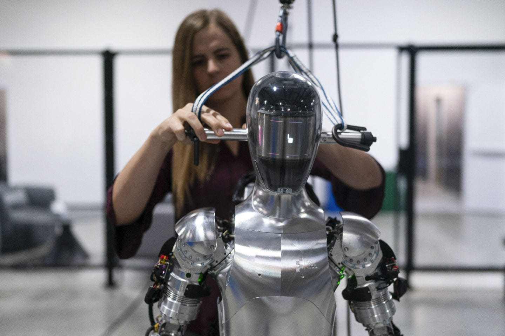
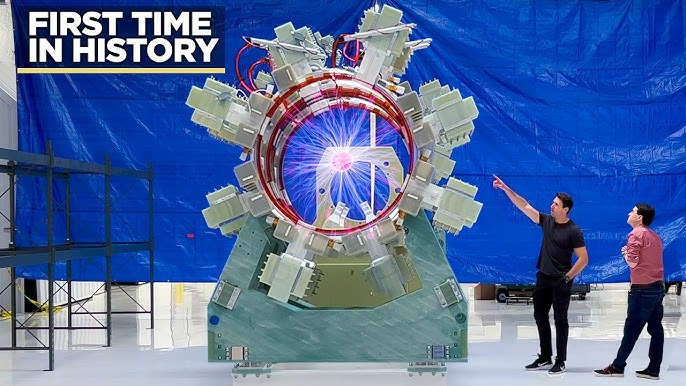
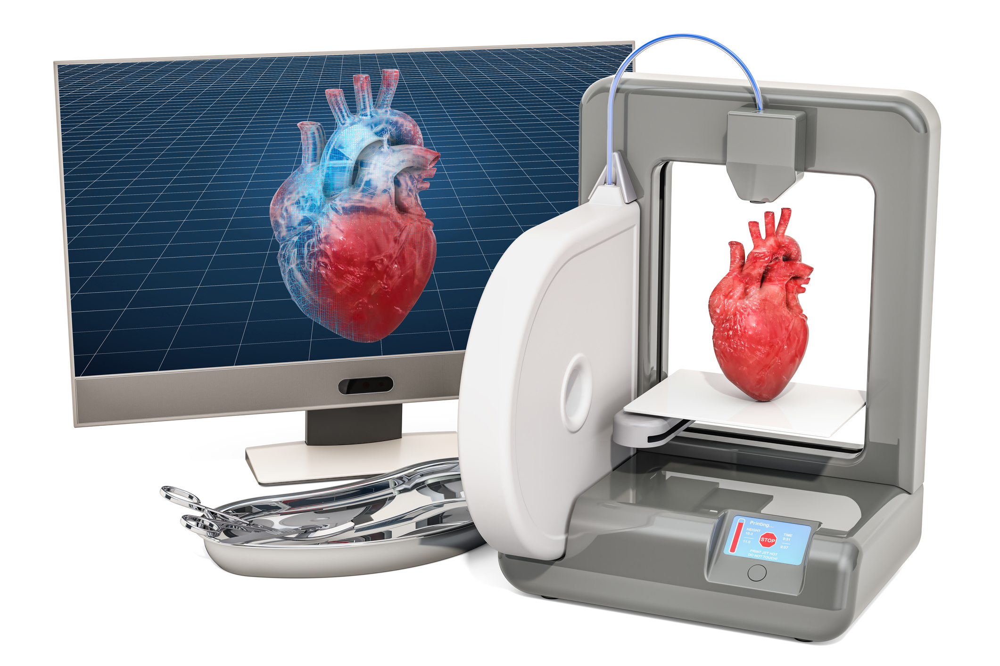

The race to Artificial General Intelligence (AGI) is heating up as leading AI firms report breakthroughs in self-learning AI systems. Unlike traditional AI, AGI can learn any task, reason like a human, and even improve itself. Experts predict that AGI could revolutionize industries from healthcare to finance.

A major breakthrough in nuclear fusion was achieved this year, bringing us closer to limitless clean energy. Scientists at ITER successfully sustained a fusion reaction for over 10 minutes, surpassing previous records. This technology has the potential to end reliance on fossil fuels forever.

Scientists have successfully transplanted a 3D-printed human liver into a patient, a historic milestone in regenerative medicine. Using bio-ink made from human cells, researchers can now create custom organs, eliminating transplant waitlists.